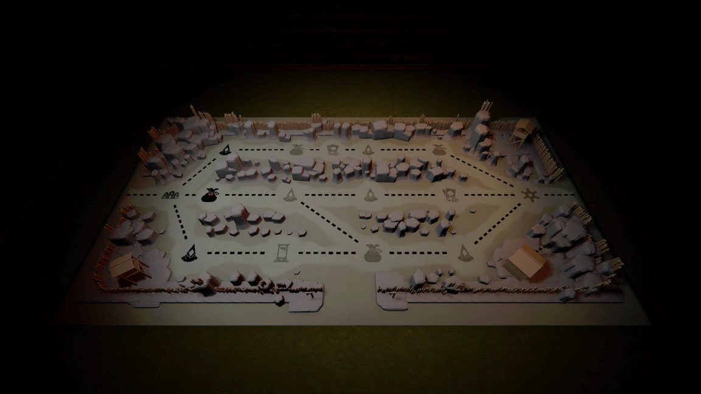
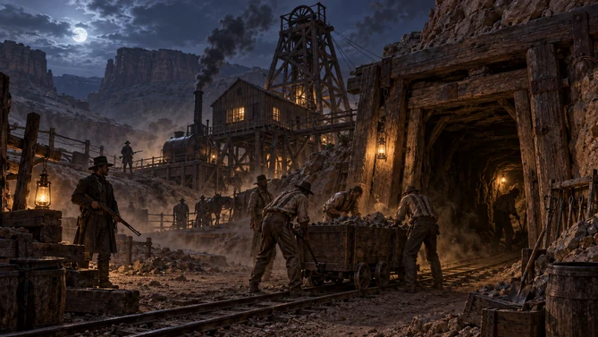
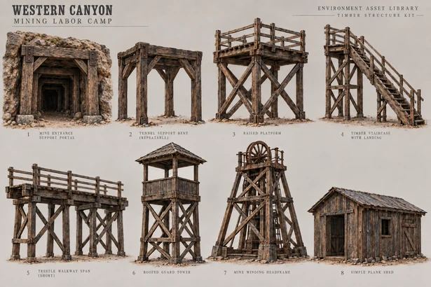

DiaBlackJack / 테마별 환경
서부 배경의 다섯 지역을 위한 로우폴리 건물 모듈과 절차 생성 지도.

01 / Concept
지역별 콘셉트
Codex로 지역별 콘셉트 이미지를 생성하고 건물의 형태와 재료를 정리했습니다.


02 / Modular assets
로우폴리 건물 모듈 제작
Codex와 Blender MCP로 콘셉트에 맞는 건물 모듈을 제작하고 Unity에 적용했습니다.
03 / Five regions
다섯 지역, 서로 다른 분위기
다섯 지역의 성격에 맞춰 건물 모듈과 조명을 구성했습니다.
04 / In engine
지도 전개와 전투 전환
지도가 펼쳐지고 건물이 나타난 뒤 전투 화면으로 전환되는 흐름을 연출했습니다.
절차 생성과 제작 도구 보기ROLE & CREDITS
담당 작업
지도 및 전투 연출, 셰이더, 3D 에셋, 도감 UI를 담당했습니다. 진행 그래프는 팀원 작업이며, 콘셉트와 에셋 제작에 AI를 활용했습니다.